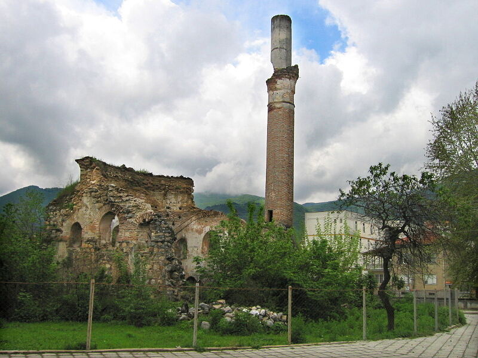

ИСТОРИЯ НА ГРАДА
Гоце Делчев (до 1951 година Неврокоп) е град в Югозападна България, в близост до река Места. Градът има богата история. През античността и средновековието Неврокоп е наследник на, намиращият се на няколко километра от него, Никополис ад Нестум, превод „Град на победата при река Нестос“ (Нестос – река Места), основан през II век от римския император Траян по повод победата му над даките. Градът е разположен на главния път, който свързва Егейския бряг с главния военен път. Името Неврокоп произлиза от турската форма на името Никополис, което означава град. Откритите крепост и селище в близост до града се смятат за предци на съвременния град.

Под турско робство Неврокоп пада под турско робство между 1374 и 1383 година. Градът е въведен в османските земи след завземането на Солон от турците през 1430 година. Под името Неврокоп селището е описано като голямо християнско село – център на зиамет (особен вид ленно владение), наброяващо 131 домакинства, 12 неженени и 24 вдовици, както и 2 войнуци (немюсюлманска военна част) с 4 ямаци (помощни османски войски). Така става най-голямото населено място в региона. Градът започва да се развива много бързо като само за един век населението му се превръща в преобладаващо мюсюлманско.
През 80-те и 90-те години на XV век се откриват джамия и мюсюлманско училище. Мехмед бей е османски паша на Никопол, потомък на християнски вероотстъпник. Въпросната Караджа паша джамия е единствения османски паметник останал до наши дни. През 1512 година се основават втора джамия, баня и второ училище. 
От преброяването от 1519 година се установява, че селището, което през 1464 година е било 4% мюсюлманско, сега е със значителен брой мюсюлмани. В града вече има две джамии, три масджида, една баня и три мектеба. През 1565 година султан Сюлейман I издава ферман за построяване на още една джамия в града в чест на сина му. В следствие на това 42% от населението на Неврокоп остава мюсюлманско.
През XVII век има спад в разширяването на града. Хаджи Калфа, водещ османски историограф, споменава града като център на кадилък и установява наличието на железни руди в покрайнините на града. По османско време Неврокоп е описан като хубав, с много джамии, 12 минарета, текета на дервиши, ханове, хамами, училища и много красиви къщи. През 1820 година е построена последната джамия с купол. През 1906 година се споменава, че в Неврокоп има 20 махали, 1432 къщи, 598 магазина, 12 джамии, 2 месджида, 2 църкви и не по-малко от 8 текета. Освен това има 7 мюсюлмански училища и 2 християнски. По това време Неврокоп е бил център на културния живот.

Неврокоп започва да се разраства през XVIII и XIX век. През XIX век има метох на Рилския манастир, развиват се занаяти, ежегодно се провежда Неврокопския панаир. Построени са църкви и училища, откриват се читалища и женски дружества. След Руско-турската война, градът остава под Османска власт, но българската общност започва борба за национално просветление. През 1912 година градът е освободен по време на Балканската война.

През комунизма и след 1989 година, икономиката на града преминава през трудни периоди, кооперативно земеделие, приватизация и модернизация на пътищата. През 2005 година се открива граничен пункт към Гърция, а през 2007 година България се присъединява към ЕС, като населението постепенно намалява до около 20,000 души към 2022 година.